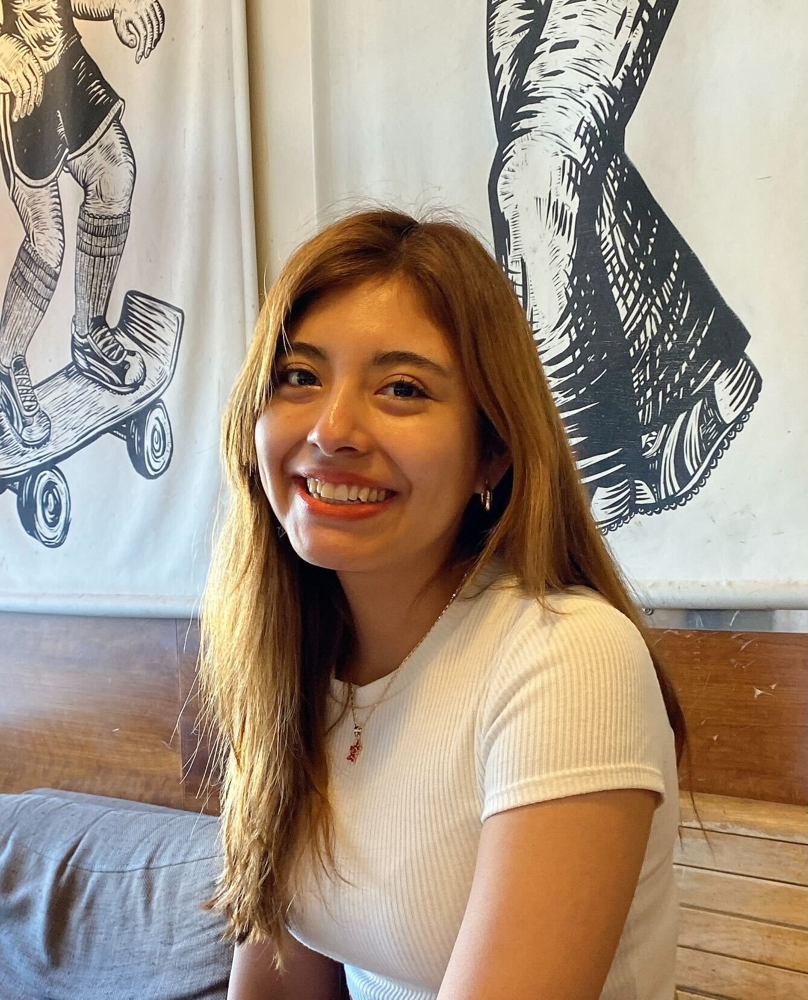

People
Principal Investigator

Sheng Chih (Peter) Jin
Peter is Assistant Professor of Genetics and Pediatrics at the Washington University School of Medicine. He is interested in understanding how genetic variation affects disease biology and using genetic and genomic analyses to infer the molecular mechanisms underlying neurodevelopmental and cardiovascular diseases. His full CV is available here.
NIH Grants
- R00HL143036: Integrative Genomic Analysis of Congenital Heart Disease (Role: PI) (Active)
- R01NS111029: Human Genetics and Molecular Mechanisms of Congenital Hydrocephalus (Role: Co-Investigator) (Active)
- R01AR067715: Genetic Risk Factors for Severe Scoliosis (Role: Co-Investigator) (Active)
- R01NS117609: Human Genetics and Molecular Mechanisms of Vein of Galen Aneurysmal Malformation (Role: Co-Investigator) (Active)
Selected Honors and Awards
- Cerebral Palsy Alliance Research Foundation Project Grant, 2022-2027
- Hydrocephalus Association Innovator Award, 2021
- Children’s Discovery Institute Faculty Scholar, 2021-2026
- Children’s Discovery Institute Zebrafish Models for Pediatric Research Services Cooperative Micro-Grant Award, 2021
- Washington University Institute of Clinical and Translational Research Funding Program Award, 2020
- K99/R00 Pathway to Independence Award, NHLBI, NIH
- American Heart Association Postdoctoral Fellowship
- James Hudson Brown – Alexander B. Coxe Fellowship, Yale School of Medicine
- Howard Hughes Medical Institute Postdoctoral Fellowship, Howard Hughes Medical Institute at Yale School of Medicine
- Fellow, Lucille P. Markey Special Emphasis Pathway in Human Pathobiology, Markey Foundation, Washington University School of Medicine
Postdoctoral Researchers and Fellows

Yung-Chun (David) Wang, Center of Regenerative Medicine Postdoctoral Fellow
David earned a B.S. in Agriculture Chemistry from the National Taiwan University. He did his Ph.D. with Dr. Shiyou Chen studying the mechanism underlying the regulation of JAK3 in abdominal aortic aneurysm at the University of Georgia. David has received a prestigious Center of Regenerative Medicine Postdoctoral Fellowship. He is focused on genetic analyses and functional genomics of congenital hydrocephalus and cerebral palsy projects.
Graduate Students

Shujuan Zhao, Ph.D. Candidate and Markey Pathway Fellow (DBBS Molecular Genetics and Genomics)
Shujuan is a 3rd year Ph.D. student at Washington University in St. Louis. She completed her BS in Pharmaceutical Engineering at the Central South University. She is working with Dr. Jin and Dr. Kahle at Massachusetts General Hospital to figure out the genetic etiology and molecular mechanisms of Vein of Galen aneurysmal malformation and Moyamoya disease.

Julie Choi, Ph.D. Student (DBBS Human & Statistical Genetics)
Julie is a 1st year Ph.D. student at Washington University in St. Louis. She completed her BS in Biology and Public Health at the University of Texas at Austin. She is working with Dr. Jin and Dr. Jeff Milbrandt to figure out the genetic etiology and molecular mechanisms of hereditary neuropathy.

Nahyun Kong, Ph.D. student (DBBS Human & Statistical Genetics)
Nahyun is a 1st year Ph.D. student at Washington University in St. Louis. She completed her BS in Biological Sciences at the Korea Advanced Institute of Science and Technology. She is developing genomic apporaches to figure out the genetic etiology and molecular mechanisms of rare movement disorders.
Staff

Po-Ying Fu, Bioinformatics Research Analyst
Po-Ying obtained her master’s degree in microbiology specialized in bioinformatics from Soochow University. In her master’s thesis, she performed genomics analysis and used cell biology approaches to reveal the anti-cancer ability of lipopolysaccharide binding peptides. To advance her programming skills, she completed several advanced computer science courses at 42 Silicon Valley (a software engineering school) and Ohlong College. She loves cycling and traveling!
Rotation Students and Interns

Devin Qui, Research Assistant

Max Wrubel, McDonnell Genome Institute OGR Student

Athziri Marcial Rodriguez, McDonnell Genome Institute OGR Summer Student

Cabria Shelton, McDonnell Genome Institute OGR Summer Student
Lab Pets
Ziggy

Alumni
Yuxiao Xu Rotation Student (WashU MSTP), 2022/05 - 2022/06
Wendy Dong Rotation Student (WashU MSTP), 2022/05 - 2022/06
Lei Lu - Rotation Student (Computer Science & Engineering), 2022/01 - 2022/02
Mariam Khanfar - Rotation Student (Human & Statistical Genetics), 2021/09 - 2021/12
Kuangying Yang - Rotation Student (Human & Statistical Genetics), 2021/09 - 2021/12; currently graduate student in Angela Hirbe’s lab.
Xiaobing (Dean) Yu - Master’s student (Computer Science & Engineering), 2021/03 - 2021/11; currently Master’s student at WashU.
Prashant Kumar Kuntala - Rotation Student (Computational and Systems Biology), 2021/09 - 2021/11; currently graduate student in Ting Wang’s lab.
Kareena Joshipura - Mount Holyoke College’s Lynk Fellow, 2021/04 - 2021/09; currently a senior at Mount Holyoke College.
Changfeng Chen - Rotation Student (Molecular Cell Biology), 2021/02 - 2021/04; currently graduate student in Brian Laidlaw’s lab.
Jian Ryou - Rotation Student (Human & Statistical Genetics), 2020/11 - 2021/02; currently graduate student in Gautam Dantas’s lab.
Sam Peters - Master’s student (Bioinformatics and Computational Biology at SLU), 2020/05 - 2021/04; currently Master’s student at SLU.
Spencer King - Master’s student (Computer Science & Engineering), 2020/05 - 2021/05; currently Associate Data Scientist at Schnuck Markets, Inc.
Shohaib Shaffiey - Master’s student (Computer Science & Engineering), 2021/02 - 2021/05; currently Master’s student at WashU.